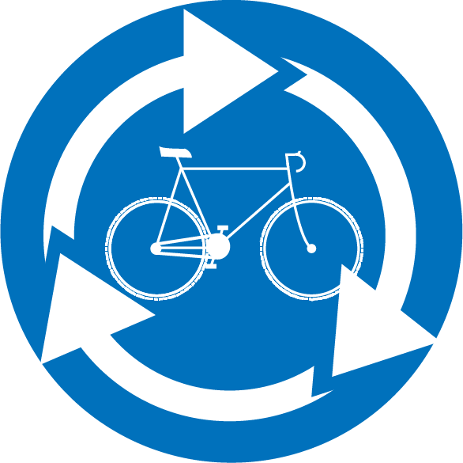

Alles over Roetz
Op deze website kan je alles lezen over Roetz, een duurzaam initiatief dat met veel passie van afgedankte fietsen en fietsonderdelen nieuwe fietsen en e-bikes maakt. Daarnaast bieden ze mensen met een kwetsbare arbeidspositie de kans om te werken in de Roetz Factory waar ze opgeleid worden tot fietsmonteur.